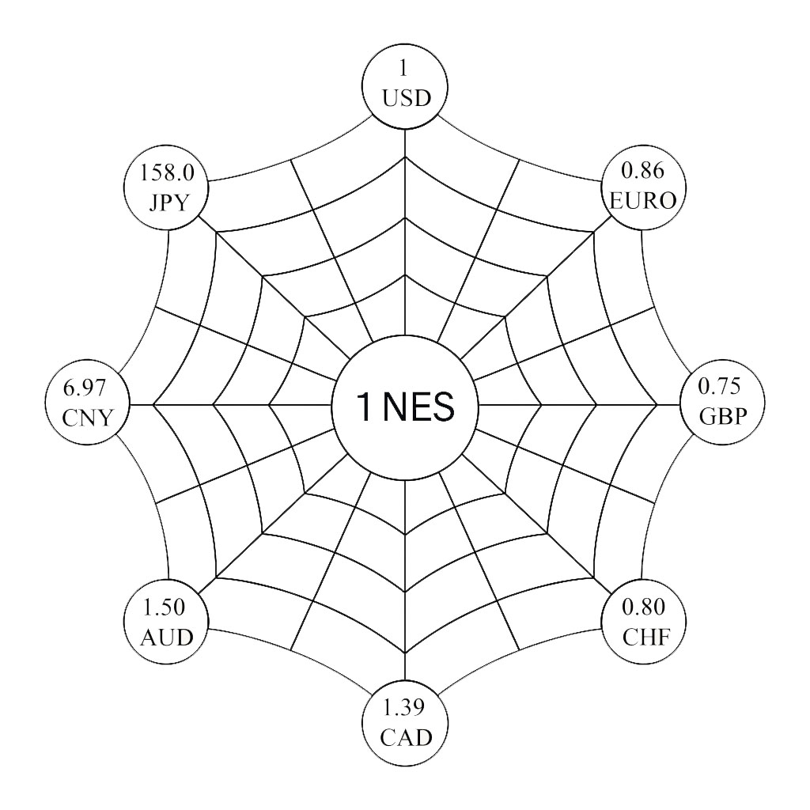

Nous avons vu dans l'article précédent que les deux derniers siècles n'ont été qu'une succession ininterrompue de crises monétaires. De l'étalon-or sterling de 1821 aux guerres de monnaies contemporaines, en passant par l'effondrement de l'Union latine, la Grande Dépression et le choc Nixon, aucun système monétaire international n'a jamais été durablement stable. Chaque construction s'est effondrée sous le poids de ses contradictions internes, laissant derrière elle chômage de masse, faillites en cascade, et parfois guerre. Le constat est implacable : nous creusons des trous de plus en plus profonds dans la nature pour combler des trous de plus en plus gros sur nos feuilles de comptabilité.
Pourtant, la communauté internationale persiste. Après chaque effondrement, elle reconstruit patiemment sur les mêmes fondations. Un nouveau Bretton Woods. Un nouveau consensus de Washington. De nouveaux accords de stabilité. Mais toujours le même logiciel : une monnaie fondée sur la dette bancaire, indexée sur la croissance du PIB, pilotée par des intérêts géopolitiques divergents. Et toujours les mêmes résultats : déséquilibres structurels, crises récurrentes, dégradation écologique accélérée.
Face à ce constat, une question s'impose : et si le problème n'était pas dans l'implémentation, mais dans le concept même ? Et si deux cents ans d'échecs monétaires ne traduisaient pas des erreurs de calibrage, mais l'inadéquation fondamentale d'un paradigme ? Et si la stabilité monétaire internationale nécessitait une rupture conceptuelle radicale plutôt qu'un énième ajustement technique ?
C'est précisément ce que propose NEMO IMS (NEgentropic MOney International Monetary System) : non pas réformer le système monétaire international actuel, mais le refonder sur des bases entièrement nouvelles. Remplacer la logique extractive par une logique régénérative. Substituer à la monnaie-dette une monnaie-écosystème. Transformer le paradigme de l'or — cette relique barbare qui pousse les humains à creuser toujours plus profond dans les entrailles de la planète — par celui de la régénération planétaire.
Le diagnostic : pourquoi tous les SMI ont échoué
Avant de présenter l'alternative, comprenons pourquoi l'échec était inévitable. Tous les systèmes monétaires internationaux depuis deux siècles partagent le même défaut structurel : ils ancrent la valeur monétaire dans des logiques extractives ou dans des rapports de force géopolitiques, jamais dans la préservation des conditions de vie sur Terre.
L'étalon-or du XIXe siècle adossait la monnaie à un métal précieux qu'il fallait arracher à la planète par un travail souvent inhumain. La logique était simple : plus vous creusez profond, plus vous êtes riche. Le bimétallisme ne changeait rien à l'équation : or ou argent, la valeur monétaire reposait sur l'extraction. Lorsque les gisements d'argent du Nevada inondèrent les marchés dans les années 1870, ce n'est pas le système qui s'effondra — c'est la loi de Gresham qui s'appliqua mécaniquement, la mauvaise monnaie chassant la bonne.
Bretton Woods sembla offrir une alternative en créant le dollar comme monnaie pivot, convertible en or mais médiatisé par la puissance américaine. Pendant quinze ans, le système fonctionna. Mais il portait en lui le paradoxe de Triffin : pour que le monde dispose de suffisamment de dollars comme monnaie de réserve, les États-Unis devaient maintenir des déficits chroniques. Ce faisant, ils minaient la confiance dans la convertibilité-or qui fondait précisément le système. En août 1971, Nixon trancha le nœud gordien en suspendant la convertibilité. Le dollar restait monnaie mondiale, mais désormais adossé uniquement à la puissance militaire et économique américaine.
Depuis 1973, nous vivons dans un non-système : des changes flottants censément régulés par les marchés, mais en réalité pilotés par les politiques monétaires des grandes banques centrales. Le résultat ? Une succession de crises de plus en plus graves et rapprochées : chocs pétroliers, crise de la dette des années 1980, krach asiatique de 1997, Lehman Brothers en 2008, crise de l'euro 2010-2012, pandémie COVID et retour de l'inflation en 2020-2026.
Le point commun ? Tous ces systèmes monétaires internationaux considèrent la planète comme un gisement infini de ressources à extraire pour alimenter la croissance économique. Aucun n'intègre les limites planétaires comme contrainte fondamentale. Aucun ne valorise la régénération des écosystèmes. Tous récompensent l'extraction et pénalisent la préservation.
Les fausses alternatives : BRICS et Bitcoin
Face à l'instabilité chronique du système dollar, deux alternatives sont régulièrement proposées : une monnaie des BRICS et le Bitcoin. Mais ces propositions ne changent rien au paradigme extractif — elles ne font que déplacer le problème ou l'aggraver.
BRICS : changer d'alpha sans changer de paradigme
Depuis plusieurs années, le bloc BRICS (Brésil, Russie, Inde, Chine, Afrique du Sud), récemment élargi à l'Arabie Saoudite, aux Émirats Arabes Unis, à l'Iran, à l'Égypte et à l'Éthiopie, cherche à construire une alternative au système dollar. L'ambition est claire : réduire la dépendance au dollar, échapper aux sanctions américaines, créer un système de paiement alternatif à SWIFT. Les projets abondent : BRICS Pay, BRICS Bridge, Nouvelle Banque de Développement, accumulation de réserves d'or.
Mais regardons la réalité économique du bloc BRICS+. L'élargissement de 2024 a intégré certains des plus grands producteurs mondiaux de pétrole et de gaz : l'Arabie Saoudite (77,5% de ses exportations sont des combustibles minéraux), les Émirats Arabes Unis (plus de 50%), l'Iran (68%), sans compter la Russie (61%). Le bloc contrôle désormais environ 43% de la production mondiale de pétrole, 35,5% du gaz, et des parts prépondérantes dans les minéraux critiques : terres rares (72%), manganèse (75%), graphite (50%).
Résultat : les BRICS+ ne changent pas de paradigme, ils ne font que changer d'alpha — remplacer le dominant américain par un consortium dominé par la Chine et les pétromonarchies. Le système resterait tout aussi extractif, peut-être même davantage. Une monnaie BRICS adossée aux matières premières (comme évoqué dans certains scénarios) ne ferait qu'intensifier la logique « creusez plus profond pour être plus riche ». Les pays membres resteraient exposés à la volatilité des marchés de commodités, à la malédiction des ressources (corruption, affaiblissement institutionnel), et au risque du pic de production des hydrocarbures.
Pire : le bloc BRICS+ est beaucoup plus hétérogène que le système dollar. Des rivalités géopolitiques majeures opposent ses membres (Inde-Chine notamment). Aucune institution politique commune ne pourrait garantir la stabilité monétaire. Les systèmes de paiement envisagés (BRICS Pay, BRICS Bridge) sont des outils techniques qui facilitent les échanges existants — dont une grande part porte sur des ressources naturelles. Rien ne change fondamentalement.
Au mieux, les BRICS proposent la même chose que le dollar avec moins de stabilité institutionnelle. Au pire, ils offrent un système encore plus extractif, plus dépendant des ressources fossiles et minérales, et donc plus vulnérable au déclin inévitable de ces secteurs.
Bitcoin : la monnaie privée incapable de fonctions publiques
L'autre alternative régulièrement proposée est le Bitcoin et les cryptomonnaies libertariennes. L'argument : une monnaie décentralisée, à quantité fixe, échappant au contrôle étatique et à l'inflation créée par les « planches à billets » des banques centrales. Une « monnaie saine » adossée à la preuve de travail mathématique plutôt qu'à la confiance dans un État.
Mais le Bitcoin souffre d'un défaut fondamental : une monnaie privée est structurellement incapable de réaliser des fonctions publiques. Comment financer la régénération des océans avec du Bitcoin ? Comment payer les agriculteurs qui restaurent les sols dégradés ? Comment rémunérer la protection de la biodiversité ? Le Bitcoin n'a pas été conçu pour cela. C'est un actif spéculatif dont la valeur dépend uniquement de la demande de ceux qui veulent en posséder — pas de sa contribution au bien commun.
De plus, le Bitcoin perpétue la logique extractive sous une autre forme. Le minage de Bitcoin consomme des quantités astronomiques d'électricité (comparable à la consommation d'un pays comme l'Argentine). Cette électricité doit être produite quelque part — souvent par des centrales au charbon ou au gaz. Pour sécuriser le réseau Bitcoin, on brûle la planète. La preuve de travail mathématique remplace la preuve de travail écologique, mais le résultat est le même : extraction d'énergie fossile, dégradation environnementale, concentration de richesse entre ceux qui contrôlent les fermes de minage.
Enfin, le Bitcoin ne résout aucun des dilemmes structurels du SMI actuel. Il ne crée pas de stabilité de change (sa volatilité est extrême). Il ne permet pas de politique monétaire contracyclique. Il ne finance pas les transitions écologiques. Il n'offre aucun mécanisme de redistribution ou de justice sociale. C'est une réponse purement technique — la blockchain — à un problème fondamentalement politique et écologique.
Le Bitcoin, comme l'or avant lui, cristallise une vision archaïque de la monnaie : un actif rare qu'on accumule égoïstement, dont la valeur tient à sa rareté artificielle, et qui pousse à la compétition plutôt qu'à la coopération. Posséder tout le Bitcoin du monde ne nourrira personne sur une planète dégradée. En revanche, une planète en bonne santé écologique nourrira toujours, même les plus pauvres.
BRICS et Bitcoin sont donc des fausses alternatives. Les deux restent prisonniers du paradigme extractif — l'un par dépendance structurelle aux ressources naturelles, l'autre par sa logique purement mercantiliste et son empreinte énergétique. Aucun ne propose la rupture paradigmatique nécessaire. C'est précisément ce que NEMO IMS tente d'accomplir.
La malédiction de Sisyphe : dette financière versus dette écologique
Comprendre pourquoi les SMI actuels ne peuvent pas être réformés nécessite de saisir ce que j'appelle la malédiction de Sisyphe économique : le nœud gordien entre dette financière et dette écologique.
Dans le système actuel, toute monnaie naît avec une dette bancaire. Les banques créent de la monnaie pour accompagner des productions marchandes rentables, et cette monnaie est détruite lorsque le crédit est remboursé. Ce mécanisme est efficace pour une économie de marché, mais il est structurellement incompatible avec la transition écologique. Pourquoi ? Parce que toute dette impose une rentabilité, et la rentabilité appelle l'exploitation.
Concrètement : si vous voulez dépolluer un océan, restaurer une forêt, ou régénérer un sol dégradé, vous devez emprunter. Cet emprunt génère une dette qui exige un remboursement majoré d'intérêts. Pour rembourser, vous devez générer des revenus. Pour générer des revenus dans une économie marchande, vous devez vendre quelque chose de rentable. Mais les activités de régénération écologique sont rarement rentables à court terme. Résultat : tant que le financement de la réparation écologique dépend d'une fiscalité issue d'activités dégénératives, nous sommes condamnés à détruire d'une main pour réparer de l'autre.
Le paradoxe devient total :
- Pour rembourser nos dettes financières, nous devons augmenter notre dette écologique (extraire plus, produire plus, polluer plus pour générer la croissance nécessaire au remboursement).
- Pour réduire notre dette écologique, nous devons contracter de nouvelles dettes financières (emprunter pour financer la transition écologique).
C'est le mythe de Sisyphe monétaire : nous roulons éternellement le rocher de nos dettes sans jamais atteindre le sommet. Chaque tentative de résoudre un problème aggrave l'autre. Le système monétaire actuel nous enferme dans cette boucle infernale parce qu'il est structurellement incapable de valoriser ce qui n'est pas marchand et rentable à court terme.
NEMO IMS : la rupture paradigmatique
NEMO IMS propose de trancher le nœud gordien en changeant radicalement la nature de la monnaie internationale. L'idée centrale tient en une phrase : Et si c'était GAÏA elle-même qui payait les humains pour la régénérer et la préserver ?
Non pas par l'exploitation de ses ressources — comme avec l'or ou le pétrole — mais par l'émission d'une monnaie dédiée à sa propre réparation. Une monnaie qui se crée lorsque vous régénérez un écosystème et se détruit lorsque vous le dégradez. Une monnaie dont la valeur est garantie non par un stock d'or dans les coffres d'une banque centrale, mais par la santé des systèmes vivants qui conditionnent notre survie.
Le principe : une monnaie régénérative sans dette
La monnaie de NEMO IMS — appelons-la monnaie néguentropique — serait créée ex nihilo et sans contrepartie de dette financière, uniquement en échange de prestations écologiques vérifiées. Imaginez un agriculteur qui restaure des haies bocagères détruites par l'agriculture intensive. Son travail augmente la biodiversité, capte du carbone, régule le cycle de l'eau, protège les sols contre l'érosion. Ces services écosystémiques ont une valeur réelle et mesurable pour la planète. Mais dans l'économie actuelle, ils n'ont aucune valeur marchande. Résultat : l'agriculteur ne sera jamais payé pour les fournir.
Avec NEMO IMS, ce même agriculteur serait rémunéré directement par une institution mondiale dédiée — le GAIA Economic Symposium — qui émettrait de la monnaie internationale (les NEMO Green DTS) en contrepartie de prestations écologiques certifiées. Ces DTS (Droits de Tirage Spéciaux Verts) seraient ensuite convertis par sa banque centrale nationale en monnaie nationale, créée ex nihilo pour l'occasion. Aucune dette ne serait contractée. L'agriculteur reçoit un revenu réel pour un travail réel qui a une valeur réelle pour la planète.
L'institution centrale : le GAIA Economic Symposium
Le GAIA Economic Symposium serait l'institution mondiale au cœur de NEMO IMS. Sa mission : définir, financer et vérifier les activités de régénération et de préservation des communs planétaires. Pensez-le comme un « pays virtuel » créé par convention internationale, avec lequel tous les autres pays feraient commerce. Mais ce pays virtuel n'aurait besoin ni de berlines de luxe, ni d'écrans, ni de gadgets à la mode. Il aurait besoin que vous réalisiez des prestations en faveur de l'environnement — et il vous paierait pour cela dans une unité de compte reconnue par vos banques centrales et convertible en devises nationales.
Concrètement, le GAIA Symposium serait composé d'un collège d'experts scientifiques et de représentants élus des nations participantes. Il définirait des cahiers des charges précis pour des activités régénératives : reforestation, dépollution des océans, restauration de sols dégradés, protection de la biodiversité, transition agroécologique. Il lancerait des appels d'offres internationaux. Il sélectionnerait les prestataires — États, entreprises, coopératives, associations. Il vérifierait la réalisation effective des prestations via des indicateurs scientifiques robustes. Et il émettrait les NEMO Green DTS en contrepartie.
Les NEMO Green DTS : une monnaie internationale écologique
Les NEMO Green DTS fonctionneraient comme une monnaie de règlement international, similaire aux DTS actuels du FMI, mais avec une différence fondamentale : leur création ne serait pas liée aux quotes-parts des États membres ni à leurs PIB, mais exclusivement aux activités de régénération planétaire.
Voici le circuit complet :
- Le GAIA Symposium identifie un besoin : par exemple, restaurer 10 millions d'hectares de forêts tropicales.
- Il lance un appel d'offres. Un consortium d'ONG brésiliennes, congolaises et indonésiennes remporte le marché.
- Le consortium réalise les travaux de reforestation. Chaque arbre planté et survivant est géolocalisé et vérifié par satellite.
- Le GAIA Symposium valide la prestation et émet des NEMO Green DTS équivalents à la valeur écologique créée (carbone séquestré, biodiversité restaurée, régulation du cycle de l'eau...).
- Le consortium présente ces DTS à sa banque centrale nationale (Brésil, Congo, Indonésie).
- La banque centrale convertit les DTS en monnaie nationale au taux de change fixe du NEMO Exchange Standard, par création monétaire ex nihilo et sans dette.
- Le consortium paie ses employés, ses fournisseurs, ses taxes. Cette monnaie nouvelle circule dans l'économie réelle.
Résultat : la reforestation a été financée sans dette, sans ponction fiscale sur l'économie extractive, sans déficit budgétaire. Des emplois ont été créés. Des revenus ont été distribués. Des écosystèmes ont été régénérés. La masse monétaire mondiale a augmenté, mais cette augmentation est adossée à une création de valeur écologique réelle et vérifiable.
Le NEMO Exchange Standard : des changes fixes écologiques
Pour éviter les guerres de monnaies qui ont ravagé le XXe siècle, NEMO IMS propose un retour à un système de taux de change fixes — mais radicalement repensé. Le NEMO Exchange Standard fixerait les parités entre monnaies nationales non pas sur la base de réserves d'or ou de dollar, mais sur la base d'indicateurs de soutenabilité écologique et sociale.
Concrètement : votre taux de change ne dépendrait plus de vos réserves en devises ou de la puissance de votre économie extractive, mais de votre performance écologique mesurée objectivement. Un pays qui dégrade massivement ses écosystèmes verrait sa monnaie se déprécier. Un pays qui régénère activement ses forêts, protège sa biodiversité, développe une agriculture régénérative verrait sa monnaie s'apprécier.
Ce mécanisme crée une incitation puissante : la régénération écologique devient un avantage compétitif monétaire. Les pays ne sont plus tentés par la dévaluation compétitive pour doper leurs exportations — car cette dévaluation serait automatiquement déclenchée par leur mauvaise performance écologique. Au contraire, ils sont incités à améliorer leurs indicateurs environnementaux pour renforcer leur monnaie.
La toile d'araignée monétaire : un référentiel universel sans hégémonie
Pour sortir définitivement du piège des devises-clés, NEMO IMS utilise une métaphore puissante : la toile d'araignée monétaire.
Imaginez une toile d'araignée. Au centre, un point de référence : le NEMO Exchange Standard (NES). Toutes les devises nationales y sont reliées par un fil, chacune avec un taux de change fixe mais révisable si nécessaire selon des critères objectifs (performance écologique, équilibre commercial, stabilité sociale). Autour du centre (1 NES) s'organise donc la toile d'araignée monétaire, où chaque devise nationale se relie au référentiel par un taux de change scriptural fixe.

Voici un exemple de table de change NEMO Exchange Standard (cotation indirecte) :
| Devise | Code | Taux de change |
|---|---|---|
| US Dollar | USD | 1 NES = 1.00 USD |
| Euro | EUR | 1 NES = 0.86 EUR |
| British Pound | GBP | 1 NES = 0.75 GBP |
| Yuan Renminbi | CNY | 1 NES = 6.97 CNY |
| Japanese Yen | JPY | 1 NES = 158.00 JPY |
Cotation indirecte : combien de monnaie nationale vaut une unité de NES ?
Le NES n'est pas une monnaie internationale qu'on détient ou qu'on échange. C'est un référentiel de comptabilité universel — une unité de compte pure, comme le mètre pour les distances. Toutes les nations participantes disposent d'un taux de change fixe avec le NES, garantissant la stabilité globale et éliminant les déséquilibres structurels entre nations.
Une institution dédiée, NEMO SWIFT, aura la responsabilité d'opérer les conversions et d'assurer la symétrie comptable des flux au sein du commerce international. Plus besoin de devises dominantes. Plus besoin de réserves de change colossales en dollars. Chaque pays conserve sa devise et sa culture monétaire, mais la révolution consiste à se défaire des asymétries monétaires internationales.
La règle de trois : comment fonctionne la conversion
Dans ce système, convertir une monnaie en une autre devient d'une simplicité mathématique. Une simple règle de trois suffit : on convertit une monnaie en une autre via le centre fixe.
Exemple concret : un importateur français achète des produits chinois pour 10 000 €.
- Conversion EUR → NES : Selon la table, 1 NES = 0.86 EUR. Donc 10 000 EUR = 10 000 ÷ 0.86 = 11 628 NES.
- Conversion NES → CNY : Selon la table, 1 NES = 6.97 CNY. Donc 11 628 NES = 11 628 × 6.97 = 81 047 CNY.
- Opération monétaire : NEMO SWIFT détruit comptablement les 10 000 EUR du compte de l'importateur français et crée comptablement 81 047 CNY sur le compte de l'exportateur chinois.
Résultat : le paiement international s'effectue sans passer par le dollar, sans réserves de change, avec une parfaite symétrie comptable. Le paiement en devise de l'importateur est détruit, le paiement en devise de l'exportateur est créé. Les flux monétaires se créent et se détruisent en parfaite symétrie, garantis par NEMO SWIFT, gardienne de la toile.
Cette architecture met fin à l'hégémonie du dollar et aux déséquilibres structurels du commerce mondial. Les monnaies cessent d'être hiérarchisées. Chaque nation peut commercer sans subir l'asymétrie d'une devise-clé. Le système devient intrinsèquement multipolaire, équilibré, et orienté vers la coopération plutôt que la domination.
La destruction monétaire : les fontes ciblées
Mais NEMO IMS ne se contente pas de créer de la monnaie pour la régénération. Il propose aussi de détruire de la monnaie lorsque des activités dégénératives sont détectées. C'est le principe des fontes monétaires pondérées.
Le mécanisme est contre-intuitif mais puissant : chaque transaction commerciale serait tracée et évaluée selon son impact écologique. Une transaction liée à une activité fortement dégénérative (extraction minière polluante, agriculture industrielle destructrice de sols, production de plastiques à usage unique...) subirait une « fonte » — c'est-à-dire qu'une partie de la monnaie utilisée serait automatiquement détruite lors du paiement.
Cette destruction ne serait pas une taxe (qui génère un revenu pour l'État), mais une véritable annihilation monétaire. Résultat : les activités dégénératives deviennent structurellement moins rentables car elles font fondre la masse monétaire. Les acteurs économiques sont incités à basculer vers des modèles régénératifs non pas par altruisme, mais par pure rationalité économique.
Inversement, les activités régénératives — agriculture biologique, économie circulaire, énergies renouvelables, écotourisme... — bénéficieraient de « bonifications » : création monétaire supplémentaire lors des transactions, rendant ces activités structurellement plus rentables.
Comment NEMO IMS résout les dilemmes du SMI actuel
Revenons aux échecs structurels que nous avons identifiés dans l'article précédent. Comment NEMO IMS les résout-il ?
1. Le paradoxe de Triffin
Dans le système actuel, le pays émetteur de la monnaie de réserve (les États-Unis) doit maintenir des déficits chroniques pour alimenter le monde en liquidités. NEMO IMS élimine ce problème en déconnectant la création de monnaie internationale (les NEMO Green DTS) de tout pays particulier. Les DTS sont émis par le GAIA Symposium, institution mondiale, uniquement en contrepartie de régénération écologique vérifiée. Aucun pays ne jouit d'un « privilège exorbitant ». Tous sont soumis aux mêmes règles.
2. Le triangle d'impossibilité de Mundell
Le triangle de Mundell stipule qu'on ne peut simultanément avoir des changes fixes, la libre circulation des capitaux, et une politique monétaire autonome. NEMO IMS contourne ce trilemme en introduisant une quatrième dimension : la performance écologique. Les changes sont fixes mais ajustables selon des critères objectifs (indicateurs environnementaux). La circulation des capitaux peut être régulée selon l'impact écologique des flux. La politique monétaire nationale garde son autonomie pour les circuits de monnaie-dette classique, mais s'articule avec le circuit de monnaie régénérative.
3. Les guerres de monnaies
Les dévaluations compétitives disparaissent car elles seraient automatiquement déclenchées par une dégradation des indicateurs écologiques. Un pays qui voudrait dévaluer pour doper ses exportations devrait simultanément améliorer sa performance environnementale — ce qui est contradictoire avec la logique extractive habituelle. Les incitations sont inversées : au lieu de dégrader pour croître, il faut régénérer pour prospérer.
4. La malédiction de Sisyphe (dette financière vs dette écologique)
C'est peut-être la résolution la plus fondamentale. En créant un circuit monétaire entièrement dédié à la régénération écologique, sans contrepartie de dette financière, NEMO IMS permet enfin de réduire simultanément nos dettes financières ET nos dettes écologiques. Les NEMO Green DTS injectent des revenus nouveaux dans l'économie réelle sans créer de dette. Ces revenus peuvent être utilisés pour rembourser les dettes existantes (ruissellement national sur les dettes privées et souveraines) tout en finançant la transition écologique.
Un nouveau paradigme monétaire
NEMO IMS n'est pas une réforme technique du système monétaire international. C'est une refondation philosophique de ce que devrait être la monnaie au XXIe siècle. Plutôt qu'un voile neutre sur les échanges marchands ou un instrument de puissance géopolitique, la monnaie devient un outil de pilotage de l'équilibre entre humanité et planète.
L'or du XIXe siècle valorisait l'extraction. Le dollar du XXe siècle valorisait la puissance militaire et économique. Les NEMO Green DTS du XXIe siècle valoriseraient la régénération des systèmes vivants. C'est un changement de logiciel complet : de l'économie de l'extraction à l'économie de l'équilibre.
Bien sûr, les obstacles sont immenses. NEMO IMS nécessiterait un consensus mondial sans précédent. Il faudrait créer des institutions internationales nouvelles avec des pouvoirs réels. Il faudrait concevoir des indicateurs de régénération écologique robustes et incontestables. Il faudrait surmonter les résistances des acteurs qui profitent du système actuel. Il faudrait inventer des mécanismes de gouvernance démocratique à l'échelle planétaire.
Mais après deux siècles d'échecs monétaires répétés, après avoir épuisé toutes les variantes de l'ancien paradigme — étalon-or, bimétallisme, Bretton Woods, changes flottants — peut-être est-il temps d'envisager sérieusement une rupture radicale. Car comme le disait Einstein : « On ne résout pas un problème avec les modes de pensée qui l'ont engendré. »
NEMO IMS propose précisément ce changement de mode de pensée. Non pas ajuster le système monétaire international pour qu'il soit un peu moins destructeur, mais le refonder pour qu'il devienne régénératif par construction. Non pas espérer que les marchés s'autorégulent miraculeusement, mais piloter activement l'économie vers l'équilibre écologique.
L'histoire monétaire des deux derniers siècles nous enseigne une leçon claire : aucun système monétaire international fondé sur l'extraction, la dette, ou le rapport de force géopolitique n'a jamais été stable durablement. Si nous voulons un résultat différent, nous devons essayer quelque chose de radicalement différent. NEMO IMS est cette proposition radicale.
La question n'est plus de savoir si nous pouvons nous permettre une telle révolution monétaire. Après deux siècles d'échecs et face à l'urgence écologique, la question est : pouvons-nous nous permettre de ne pas l'essayer ?
← Article 3 : Histoire des crises monétaires · Découvrir le livre →